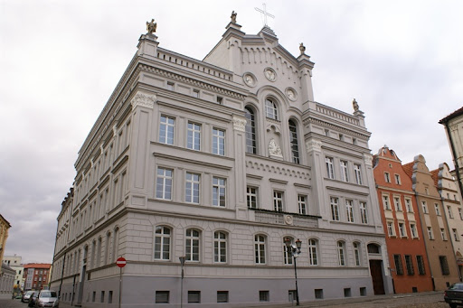

Dom Macierzysty Zgromadzenia Sióstr św. Elżbiety w Nysie to istotne miejsce dla wspólnoty zakonnej, pełniące rolę centralnego klasztoru dla sióstr elżbietanek. Znany z historycznej wartości i duchowego znaczenia, budynek ten jest zarówno miejscem modlitwy, jak i centrum działalności społecznej. Jego architektura i atmosfera przyciągają wiernych oraz zainteresowanych historią odwiedzających.